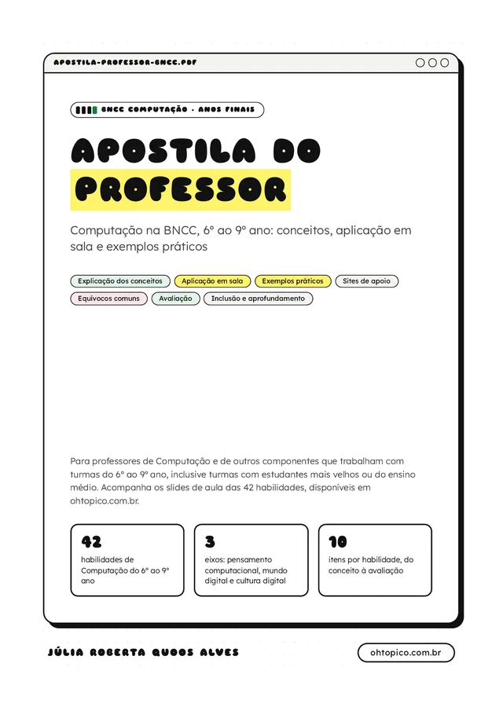
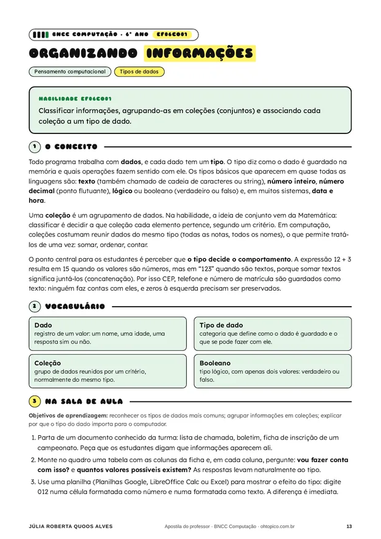
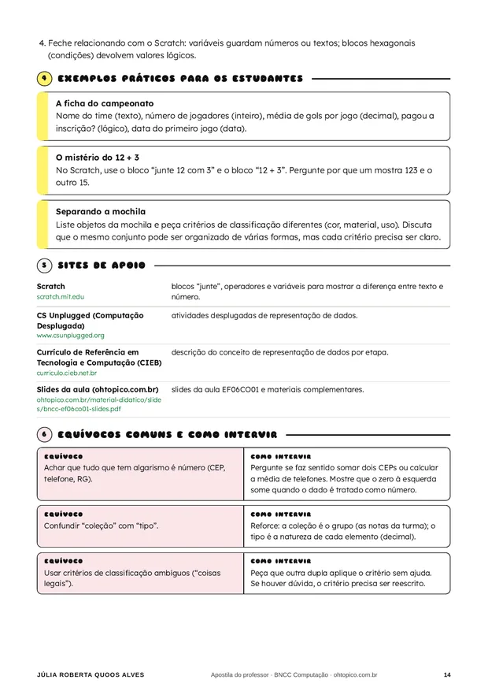

Apostila do professor: Computação na BNCC
As 42 habilidades de Computação do 6º ao 9º ano explicadas para quem vai dar a aula: o conceito, como aplicar em sala, exemplos práticos para repassar aos estudantes, sites de apoio e uma rubrica de avaliação. Gratuita, em PDF.

Para professores de Computação e de outros componentes
A BNCC Computação (Resolução CNE/CEB nº 1/2022) não exige uma disciplina própria: cada rede pode trabalhar as habilidades em um componente específico, de forma integrada ou em projetos. A apostila foi escrita para que qualquer professor dos anos finais consiga preparar a aula com segurança, inclusive em turmas com estudantes mais velhos ou do ensino médio. Todas as atividades propostas têm uma versão que funciona sem computador.
Do conceito à avaliação, em 10 itens
O conceito
Explicação para o professor, com a base teórica da habilidade.
Vocabulário
Os termos que os estudantes precisam dominar.
Na sala de aula
Objetivos e sequência didática sugerida.
Exemplos práticos
Situações prontas para repassar aos estudantes.
Sites de apoio
Ferramentas e leituras, com o uso indicado.
Equívocos comuns
As dúvidas mais frequentes e como intervir.
Como avaliar
Rubrica em três níveis, para observação ou autoavaliação.
Inclusão
Adaptações e acessibilidade.
Aprofundamento
Para estudantes mais velhos ou do ensino médio.
Conexões
Ligações com outros componentes curriculares.


As 42 fichas, por ano
Textos das habilidades resumidos para leitura rápida; para a redação oficial, consulte a BNCC. O link de cada ficha abre o PDF na página certa.
6º ano10 habilidades
-
EF06CO01Pensamento computacional · Tipos de dados
Organizando informações
Classificar informações, agrupando-as em coleções (conjuntos) e associando cada coleção a um tipo de dado.
Abrir a ficha no PDF (p. 13) → -
EF06CO02Pensamento computacional · Linguagem de programação
Sequência, repetição e decisão
Elaborar algoritmos com instruções sequenciais, de repetição e de seleção usando uma linguagem de programação.
Abrir a ficha no PDF (p. 16) → -
EF06CO03Pensamento computacional · Linguagem de programação
Do problema ao programa
Descrever com precisão a solução de um problema, construindo o programa que implementa essa solução.
Abrir a ficha no PDF (p. 19) → -
EF06CO04Pensamento computacional · Decomposição
Dividir para resolver
Construir soluções de problemas usando a técnica de decomposição e automatizá-las com uma linguagem de programação.
Abrir a ficha no PDF (p. 22) → -
EF06CO05Pensamento computacional · Generalização
Entradas e saídas
Identificar as entradas e as saídas esperadas de um problema, com seus tipos de dados, e definir a solução.
Abrir a ficha no PDF (p. 25) → -
EF06CO06Pensamento computacional · Generalização
Um algoritmo para todos os casos
Comparar casos particulares de um mesmo problema e criar um algoritmo que resolva todos, usando variáveis (parâmetros).
Abrir a ficha no PDF (p. 28) → -
EF06CO07Mundo digital · Transmissão de dados
Como a mensagem viaja
Entender como a informação é quebrada em pedaços, transmitida em pacotes por vários equipamentos e reconstruída no destino.
Abrir a ficha no PDF (p. 31) → -
EF06CO08Mundo digital · Gestão de dados
Arquivos em ordem
Compreender e utilizar formas de armazenar, manipular, compactar e recuperar arquivos, documentos e metadados.
Abrir a ficha no PDF (p. 34) → -
EF06CO09Cultura digital · Tecnologia digital e sociedade
Do outro lado da tela tem gente
Apresentar conduta e linguagem apropriadas ao se comunicar em ambiente digital, com ética e respeito.
Abrir a ficha no PDF (p. 37) → -
EF06CO10Cultura digital · Tecnologia digital e sustentabilidade
Quanto custa um celular?
Analisar o consumo de tecnologia na sociedade, a produção dos recursos, a obsolescência e a sustentabilidade.
Abrir a ficha no PDF (p. 40) →
7º ano11 habilidades
-
EF07CO01Pensamento computacional · Registros e matrizes
Fichas e listas
Criar soluções que usem registros e matrizes unidimensionais para descrever informações e automatizá-las com uma linguagem de programação.
Abrir a ficha no PDF (p. 44) → -
EF07CO02Pensamento computacional · Análise de programas
Caça aos bugs
Analisar programas para detectar e remover erros, ampliando a confiança na sua correção.
Abrir a ficha no PDF (p. 47) → -
EF07CO03Pensamento computacional · Projetos com programação
Programar para outras matérias
Construir soluções computacionais de problemas de diferentes áreas, individual e colaborativamente, escolhendo estruturas de dados e técnicas adequadas.
Abrir a ficha no PDF (p. 50) → -
EF07CO04Pensamento computacional · Propriedades de grafos
Pontos e ligações
Explorar propriedades básicas de grafos.
Abrir a ficha no PDF (p. 53) → -
EF07CO05Pensamento computacional · Reúso
Escreva uma vez, use sempre
Criar algoritmos usando decomposição e reúso, de forma colaborativa, e automatizá-los com uma linguagem de programação.
Abrir a ficha no PDF (p. 56) → -
EF07CO06Mundo digital · Protocolos de comunicação em redes
As regras da conversa
Compreender o papel de protocolos para a transmissão de dados.
Abrir a ficha no PDF (p. 59) → -
EF07CO07Mundo digital · Segurança cibernética
Proteja sua vida digital
Identificar problemas de segurança cibernética e experimentar formas de proteção.
Abrir a ficha no PDF (p. 62) → -
EF07CO08Cultura digital · Cyberbullying
Discordar sem ferir
Demonstrar empatia sobre opiniões divergentes na web.
Abrir a ficha no PDF (p. 65) → -
EF07CO09Cultura digital · Cyberbullying
Cyberbullying não é brincadeira
Reconhecer e debater sobre cyberbullying.
Abrir a ficha no PDF (p. 68) → -
EF07CO10Cultura digital · Impactos da tecnologia digital
Para onde vai o lixo eletrônico?
Identificar os impactos ambientais do descarte de peças de computadores e eletrônicos e sua relação com a sustentabilidade.
Abrir a ficha no PDF (p. 71) → -
EF07CO11Cultura digital · Produção digital
Do roteiro à publicação
Criar, documentar e publicar produtos (vídeos, podcasts, sites) usando recursos de tecnologia, individual ou colaborativamente.
Abrir a ficha no PDF (p. 74) →
8º ano11 habilidades
-
EF08CO01Pensamento computacional · Listas e recursão
Um problema dentro de outro
Construir soluções de problemas usando a técnica de recursão e automatizá-las com uma linguagem de programação.
Abrir a ficha no PDF (p. 78) → -
EF08CO02Pensamento computacional · Listas e recursão
Listas que crescem
Criar soluções que usem listas para descrever informações e automatizá-las com uma linguagem de programação.
Abrir a ficha no PDF (p. 81) → -
EF08CO03Pensamento computacional · Algoritmos clássicos
Buscar e ordenar
Utilizar algoritmos clássicos de manipulação sobre listas.
Abrir a ficha no PDF (p. 84) → -
EF08CO04Pensamento computacional · Projetos com programação
Um programa para outra disciplina
Construir soluções computacionais de problemas de diferentes áreas, individual e colaborativamente.
Abrir a ficha no PDF (p. 87) → -
EF08CO05Mundo digital · Sistemas distribuídos
Muitas mãos
Compreender os conceitos de paralelismo, concorrência e armazenamento/processamento distribuídos.
Abrir a ficha no PDF (p. 90) → -
EF08CO06Mundo digital · Internet
Como a internet funciona
Entender como é a estrutura e o funcionamento da internet.
Abrir a ficha no PDF (p. 93) → -
EF08CO07Cultura digital · Redes sociais e segurança da informação
Por dentro das redes sociais
Compartilhar informações em redes sociais compreendendo sua dinâmica de funcionamento.
Abrir a ficha no PDF (p. 96) → -
EF08CO08Cultura digital · Redes sociais e segurança da informação
Seus dados valem muito
Distinguir os tipos de dados pessoais solicitados em espaços digitais e os riscos associados.
Abrir a ficha no PDF (p. 99) → -
EF08CO09Cultura digital · Redes sociais e segurança da informação
Li e concordo?
Analisar criticamente as políticas e os termos de uso das redes sociais e demais plataformas.
Abrir a ficha no PDF (p. 102) → -
EF08CO10Cultura digital · Segurança em ambientes virtuais
Privacidade é direito
Discutir questões sobre segurança e privacidade relacionadas ao uso dos ambientes virtuais.
Abrir a ficha no PDF (p. 105) → -
EF08CO11Cultura digital · Uso crítico das mídias digitais
Checagem de fatos
Avaliar precisão, relevância, adequação, abrangência e vieses de fontes de informação eletrônica.
Abrir a ficha no PDF (p. 108) →
9º ano10 habilidades
-
EF09CO01Pensamento computacional · Grafos e árvores
Árvores que decidem
Criar soluções que usem árvores e grafos para descrever informações e automatizá-las com uma linguagem de programação.
Abrir a ficha no PDF (p. 112) → -
EF09CO02Pensamento computacional · Projetos com programação
Resolver problemas de verdade
Construir soluções computacionais de problemas de diferentes áreas, individual e colaborativamente.
Abrir a ficha no PDF (p. 115) → -
EF09CO03Pensamento computacional · Autômatos e eventos
Máquinas de estados
Usar autômatos para descrever comportamentos de forma abstrata, automatizando-os com uma linguagem de programação.
Abrir a ficha no PDF (p. 118) → -
EF09CO04Mundo digital · Segurança cibernética
Como agem os ataques
Compreender o funcionamento de malwares e outros ataques cibernéticos.
Abrir a ficha no PDF (p. 121) → -
EF09CO05Mundo digital · Segurança cibernética
Segredos em código
Analisar técnicas de criptografia para armazenamento e transmissão de dados.
Abrir a ficha no PDF (p. 124) → -
EF09CO06Cultura digital · Tecnologia digital e sociedade
Tecnologia para a nossa cidade
Analisar problemas sociais da cidade e do estado a partir de ambientes digitais, propondo soluções.
Abrir a ficha no PDF (p. 127) → -
EF09CO07Cultura digital · Tecnologia digital e sociedade
Tecnologia não é neutra
Avaliar aplicações e implicações políticas, socioambientais e culturais das tecnologias digitais.
Abrir a ficha no PDF (p. 130) → -
EF09CO08Cultura digital · Tecnologia digital e sociedade
Desigualdade digital
Discutir como a distribuição desigual de recursos de computação na economia global levanta questões éticas.
Abrir a ficha no PDF (p. 133) → -
EF09CO09Cultura digital · Autoria em meio digital
Isso é seu?
Criar ou utilizar conteúdo em meio digital compreendendo questões éticas de direitos autorais e uso de imagem.
Abrir a ficha no PDF (p. 136) → -
EF09CO10Cultura digital · Qualidade da informação
Verdade em todos os formatos
Avaliar a veracidade, a credibilidade e a relevância da informação em seus diferentes formatos.
Abrir a ficha no PDF (p. 139) →
Também no PDF: apresentação, os três eixos e a progressão do 6º ao 9º ano, quadro das 42 habilidades, orientações para a prática, glossário, sites de apoio por tema, modelo de plano de aula e ficha de observação, referências.
Uma ficha para cada aula
Cada habilidade também tem um conjunto de slides para aula expositiva de 30 minutos, com atividade e roteiro do professor. A apostila aprofunda o que os slides apresentam, mas pode ser usada de forma independente.
Livre para usar em sala
Material de Júlia Roberta Quoos Alves, professora de computação no Rio Grande do Sul, sob licença CC BY-NC-SA 4.0: pode copiar, imprimir e adaptar, com citação da autoria, sem fins comerciais e compartilhando pela mesma licença.